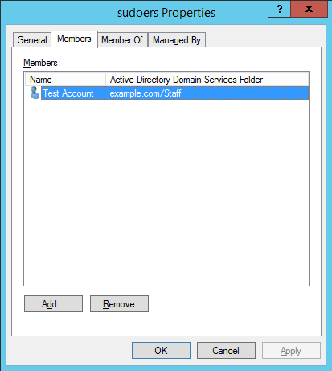

How To Join CentOS Linux To An Active Directory Domain


Intro
These steps were tested using Active Directory on Windows 2008 R2 and Windows 2012 R2.
Pre-requisites
- Install the packages needed
yum -y install sssd realmd oddjob oddjob-mkhomedir adcli \
samba-common samba-common-tools krb5-workstation \
openldap-clients policycoreutils-python
- Ensure to use your AD as domain server
[root@centos7 ~]# cat /etc/resolv.conf
search example.com
nameserver 192.168.1.2
Joing to Windows Domain
- Using realm command to join into the domain
[root@centos7 ~]# realm join --user=administrator example.com
Password for administrator:
- Look into the CentOS machine
[root@centos7 ~]# realm list
example.com
type: kerberos
realm-name: EXAMPLE.COM
domain-name: example.com
configured: kerberos-member
server-software: active-directory
client-software: sssd
required-package: oddjob
required-package: oddjob-mkhomedir
required-package: sssd
required-package: adcli
required-package: samba-common-tools
login-formats: %U@example.com
login-policy: allow-realm-logins
- Look the centOS machine in the Active Directory

- Change the way to get the users in the
sssd.confconfig file. Modify these lines
use_fully_qualified_names = True
fallback_homedir = /home/%u@%d
[root@centos7 ~]# systemctl restart sssd
- Testing this modification
[root@centos7 ~]# id administrator
id: administrator: no such user
[root@centos7 ~]# id administrator@example.com
uid=1829600500(administrator@example.com) gid=1829600513(domain users@example.com) groups=1829600513(domain users@example.com),1829600512(domain
- Enable
sudoersgroup
[root@centos7 ~]# cat /etc/sudoers.d/sudoers
%sudoers ALL=(ALL) ALL
- Create a user
test1and add to groupsudoers

- Testing
[user1@centos7 ~]$ sudo su
[sudo] password for user1:
[root@centos7 user1]#
[root@centos7 user1]# whoami
root
- Leaving the domain
[root@centos7 ~]# realm leave example.com
Source: https://www.rootusers.com/how-to-join-centos-linux-to-an-active-directory-domain/
comments powered by Disqus